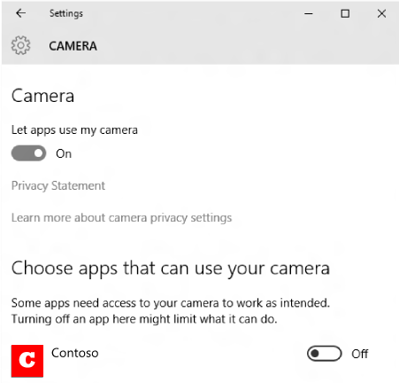

Launch the Windows Settings app
Learn how to launch the Windows Settings app. This topic describes the ms-settings: URI scheme. Use this URI scheme to launch the Windows Settings app to specific settings pages.
Launching to the Settings app is an important part of writing a privacy-aware app. If your app can't access a sensitive resource, we recommend providing the user a convenient link to the privacy settings for that resource. For more information, see Security and identity.
Important APIs
The following Windows Runtime (WinRT) APIs are used in this topic:
Note that the WinRT APIs used in this topic can be used in both UWP apps, WinUI apps, and other desktop apps. To read more about enabling your desktop app to work with WinRT APIs, see Call Windows Runtime APIs in desktop apps.
How to launch the Settings app
To launch the Settings app, use the ms-settings: URI scheme as shown in the following examples.
XAML hyperlink control
In this example, a Hyperlink XAML control is used to launch the privacy settings page for the microphone using the ms-settings:privacy-microphone URI.
<!--Set Visibility to Visible when access to the microphone is denied -->
<TextBlock x:Name="LocationDisabledMessage" FontStyle="Italic"
Visibility="Collapsed" Margin="0,15,0,0" TextWrapping="Wrap" >
<Run Text="This app is not able to access the microphone. Go to " />
<Hyperlink NavigateUri="ms-settings:privacy-microphone">
<Run Text="Settings" />
</Hyperlink>
<Run Text=" to check the microphone privacy settings."/>
</TextBlock>
Calling LaunchUriAsync
Alternatively, your app can call the LaunchUriAsync method to launch the Settings app. This example shows how to launch to the privacy settings page for the camera using the ms-settings:privacy-webcam URI.
bool result = await Windows.System.Launcher.LaunchUriAsync(new Uri("ms-settings:privacy-webcam"));
bool result = co_await Windows::System::Launcher::LaunchUriAsync(Windows::Foundation::Uri(L"ms-settings:privacy-webcam"));
The code above launches the privacy settings page for the camera:

For more info about launching URIs, see Launch the default app for a URI.
ms-settings: URI scheme reference
The following sections describe different categories of ms-settings URIs used to open various pages of the Settings app:
- Accounts
- Apps
- Control Center
- Cortana
- Devices
- Ease of access
- Extras
- Family Group
- Gaming
- Mixed reality
- Network and internet
- Personalization
- Phone
- Privacy
- Search
- Sound
- Surface Hub
- System
- Time and language
- Update and security
Note
The availability of some settings pages varies by Windows version and SKU. For some settings, the URI column also captures some usage information and any additional requirements that must be met for a page to be available.
Accounts
| Settings page | URI |
|---|---|
| Access work or school | ms-settings:workplace |
| Email & app accounts | ms-settings:emailandaccounts |
| Family & other people | ms-settings:otherusers |
| Provisioning | ms-settings:provisioning (only available on mobile and if the enterprise has deployed a provisioning package) ms-settings:workplace-provisioning (only available if enterprise has deployed a provisioning package) |
| Repair token | ms-settings:workplace-repairtoken |
| Set up a kiosk | ms-settings:assignedaccess |
| Sign-in options | ms-settings:signinoptions ms-settings:signinoptions-dynamiclock |
| Sync your settings | ms-settings:sync ms-settings:backup (Backup page deprecated in Windows 11) |
| Windows Anywhere | ms-settings:windowsanywhere (device must be Windows Anywhere-capable) |
| Windows Hello setup | ms-settings:signinoptions-launchfaceenrollment ms-settings:signinoptions-launchfingerprintenrollment |
| Your info | ms-settings:yourinfo |
Apps
| Settings page | URI |
|---|---|
| Apps & Features | ms-settings:appsfeatures |
| App features | ms-settings:appsfeatures-app (Reset, manage add-on & downloadable content, etc. for the app) To access this page with a URI, use the ms-settings:appsfeatures-app URI and pass an optional parameter of the package family name of the app. Example: ms-settings:appsfeatures-app?<PFN> |
| Apps for websites | ms-settings:appsforwebsites |
| Default apps | ms-settings:defaultapps (Behavior introduced in Windows 11, version 21H2 (with 2023-04 Cumulative Update) or 22H2 (with 2023-04 Cumulative Update), or later.) Append the query string parameter in the following formats using the Uri-escaped name of an app to directly launch the default settings page for that app: - registeredAppMachine=<Uri-escaped per machine installed name of app> - registeredAppUser=<Uri-escaped per user installed name of app> - registeredAUMID=<Uri-escaped Application User Model ID> For more information, see Launch the Default Apps settings page. |
| Default browser settings | ms-settings:defaultbrowsersettings (Deprecated in Windows 11) |
| Manage optional features | ms-settings:optionalfeatures |
| Offline Maps | ms-settings:maps ms-settings:maps-downloadmaps (Download maps) |
| Startup apps | ms-settings:startupapps |
| Video playback | ms-settings:videoplayback |
Control Center
| Settings page | URI |
|---|---|
| Control center | ms-settings:controlcenter |
Cortana
| Settings page | URI |
|---|---|
| Cortana across my devices | ms-settings:cortana-notifications |
| More details | ms-settings:cortana-moredetails |
| Permissions & History | ms-settings:cortana-permissions |
| Searching Windows | ms-settings:cortana-windowssearch |
| Talk to Cortana | ms-settings:cortana-language ms-settings:cortana ms-settings:cortana-talktocortana |
Important
Cortana voice assistance in Windows as a standalone app was retired in the spring of 2023. For more information, see End of support for Cortana.
Note
This Settings section on desktop will be called Search when the PC is set to regions where Cortana is not currently available or Cortana has been disabled. Cortana-specific pages (Cortana across my devices, and Talk to Cortana) will not be listed in this case.
Devices
| Settings page | URI |
|---|---|
| AutoPlay | ms-settings:autoplay |
| Bluetooth | ms-settings:bluetooth |
| Connected Devices | ms-settings:connecteddevices |
| Default camera | ms-settings:camera (Behavior deprecated in Windows 10, version 1809 and later) |
| Camera settings | ms-settings:camera (Behavior introduced in Windows 11, build 22000 and later) Append the query string parameter cameraId set to the Uri-escaped symbolic link name of a camera device to directly launch the settings for that camera. For more information, see Launch the camera settings page. |
| Mouse & touchpad | ms-settings:mousetouchpad (touchpad settings only available on devices that have a touchpad) |
| Pen & Windows Ink | ms-settings:pen |
| Printers & scanners | ms-settings:printers |
| Touch | ms-settings:devices-touch |
| Touchpad | ms-settings:devices-touchpad (only available if touchpad hardware is present) |
| Text Suggestions | ms-settings:devicestyping-hwkbtextsuggestions |
| Typing | ms-settings:typing |
| USB | ms-settings:usb |
| Wheel | ms-settings:wheel (only available if a Surface Dial device is paired) |
| Your phone | ms-settings:mobile-devices |
Ease of access
| Settings page | URI |
|---|---|
| Audio | ms-settings:easeofaccess-audio |
| Closed captions | ms-settings:easeofaccess-closedcaptioning |
| Color filters | ms-settings:easeofaccess-colorfilter ms-settings:easeofaccess-colorfilter-adaptivecolorlink ms-settings:easeofaccess-colorfilter-bluelightlink |
| Display | ms-settings:easeofaccess-display |
| Eye control | ms-settings:easeofaccess-eyecontrol |
| Hearing devices | ms-settings:easeofaccess-hearingaids (Added in Windows 11, Version 24H2) |
| High contrast | ms-settings:easeofaccess-highcontrast |
| Keyboard | ms-settings:easeofaccess-keyboard |
| Magnifier | ms-settings:easeofaccess-magnifier |
| Mouse | ms-settings:easeofaccess-mouse |
| Mouse pointer & touch | ms-settings:easeofaccess-mousepointer |
| Narrator | ms-settings:easeofaccess-narrator ms-settings:easeofaccess-narrator-isautostartenabled |
| Speech | ms-settings:easeofaccess-speechrecognition |
| Text cursor | ms-settings:easeofaccess-cursor |
| Visual Effects | ms-settings:easeofaccess-visualeffects |
Extras
| Settings page | URI |
|---|---|
| Extras | ms-settings:extras (only available if "settings apps" have been installed, for example, by a 3rd party) |
Family Group
| Settings page | URI |
|---|---|
| Family Group | ms-settings:family-group |
Gaming
| Settings page | URI |
|---|---|
| Game bar | ms-settings:gaming-gamebar |
| Game DVR | ms-settings:gaming-gamedvr |
| Game Mode | ms-settings:gaming-gamemode |
| Playing a game full screen | ms-settings:quietmomentsgame |
| TruePlay | ms-settings:gaming-trueplay (As of Windows 10, version 1809 (10.0; Build 17763), this feature is removed from Windows) |
Mixed reality
Note
These settings are only available if the Mixed Reality Portal app is installed.
Important
Windows Mixed Reality devices are not supported with Windows 11, version 24H2 and newer.
Windows Mixed Reality support is limited to Windows 10, version 20H2 through Windows 11, version 23H2.
| Settings page | URI |
|---|---|
| Audio and speech | ms-settings:holographic-audio |
| Environment | ms-settings:privacy-holographic-environment |
| Headset display | ms-settings:holographic-headset |
| Uninstall | ms-settings:holographic-management |
| Startup and desktop | ms-settings:holographic-startupandesktop |
Network and internet
| Settings page | URI |
|---|---|
| Network & internet | ms-settings:network-status |
| Advanced settings | ms-settings:network-advancedsettings |
| Airplane mode | ms-settings:network-airplanemode ms-settings:proximity |
| Cellular & SIM | ms-settings:network-cellular |
| Dial-up | ms-settings:network-dialup |
| DirectAccess | ms-settings:network-directaccess (only available if DirectAccess is enabled) |
| Ethernet | ms-settings:network-ethernet |
| Manage known networks | ms-settings:network-wifisettings |
| Mobile hotspot | ms-settings:network-mobilehotspot |
| Proxy | ms-settings:network-proxy |
| VPN | ms-settings:network-vpn |
| Wi-Fi | ms-settings:network-wifi (only available if the device has a wifi adapter) |
| Wi-Fi provisioning | ms-settings:wifi-provisioning |
Personalization
| Settings page | URI |
|---|---|
| Background | ms-settings:personalization-background |
| Choose which folders appear on Start | ms-settings:personalization-start-places |
| Colors | ms-settings:personalization-colors ms-settings:colors |
| Customize Copilot key on keyboard | ms-settings:personalization-textinput-copilot-hardwarekey |
| Dynamic Lighting | ms-settings:personalization-lighting |
| Fonts | ms-settings:fonts |
| Glance | ms-settings:personalization-glance (Deprecated in Windows 10, version 1809 and later) |
| Lock screen | ms-settings:lockscreen |
| Navigation bar | ms-settings:personalization-navbar (Deprecated in Windows 10, version 1809 and later) |
| Personalization (category) | ms-settings:personalization |
| Start | ms-settings:personalization-start |
| Taskbar | ms-settings:taskbar |
| Text input | ms-settings:personalization-textinput |
| Touch Keyboard | ms-settings:personalization-touchkeyboard |
| Themes | ms-settings:themes |
Phone
| Settings page | URI |
|---|---|
| Your phone | ms-settings:mobile-devices ms-settings:mobile-devices-addphone ms-settings:mobile-devices-addphone-direct (Opens Your Phone app) |
| Device Usage | ms-settings:deviceusage |
Privacy
| Settings page | URI |
|---|---|
| Accessory apps | ms-settings:privacy-accessoryapps (Deprecated in Windows 10, version 1809 and later) |
| Account info | ms-settings:privacy-accountinfo |
| Activity history | ms-settings:privacy-activityhistory |
| Advertising ID | ms-settings:privacy-advertisingid (Deprecated in Windows 10, version 1809 and later) |
| App diagnostics | ms-settings:privacy-appdiagnostics |
| Automatic file downloads | ms-settings:privacy-automaticfiledownloads |
| Background Apps | ms-settings:privacy-backgroundapps (Deprecated in Windows 11, 21H2 and later) Note: In Windows 11, the background app permissions are accessed individually. To view the permissions, go to Apps->Installed apps and then select "..." on a modern app and choose Advanced options. The advanced page is present for modern apps, and the Background apps permissions section will be present unless a group policy has been set or the user’s global toggle value (the deprecated setting from Windows 10) is set. To access this page with a URI, use the ms-settings:appsfeatures-app URI and pass an optional parameter of the package family name of the app. |
| Background Spatial Perception | ms-settings:privacy-backgroundspatialperception |
| Calendar | ms-settings:privacy-calendar |
| Call history | ms-settings:privacy-callhistory |
| Camera | ms-settings:privacy-webcam |
| Contacts | ms-settings:privacy-contacts |
| Documents | ms-settings:privacy-documents |
| Downloads folder | ms-settings:privacy-downloadsfolder |
| ms-settings:privacy-email | |
| Eye tracker | ms-settings:privacy-eyetracker (requires eyetracker hardware) |
| Feedback & diagnostics | ms-settings:privacy-feedback |
| File system | ms-settings:privacy-broadfilesystemaccess |
| General | ms-settings:privacy or ms-settings:privacy-general |
| Graphics | ms-settings:privacy-graphicscaptureprogrammatic ms-settings:privacy-graphicscapturewithoutborder |
| Inking & typing | ms-settings:privacy-speechtyping |
| Location | ms-settings:privacy-location |
| Messaging | ms-settings:privacy-messaging |
| Microphone | ms-settings:privacy-microphone |
| Motion | ms-settings:privacy-motion |
| Music Library | ms-settings:privacy-musiclibrary |
| Notifications | ms-settings:privacy-notifications |
| Other devices | ms-settings:privacy-customdevices |
| Phone calls | ms-settings:privacy-phonecalls |
| Pictures | ms-settings:privacy-pictures |
| Radios | ms-settings:privacy-radios |
| Speech | ms-settings:privacy-speech |
| Tasks | ms-settings:privacy-tasks |
| Videos | ms-settings:privacy-videos |
| Voice activation | ms-settings:privacy-voiceactivation |
Search
| Settings page | URI |
|---|---|
| Search | ms-settings:search |
| Search more details | ms-settings:search-moredetails |
| Search Permissions | ms-settings:search-permissions |
Sound
| Settings page | URI |
|---|---|
| Volume mixer | ms-settings:apps-volume |
| Sound | ms-settings:sound |
| Sound devices | ms-settings:sound-devices |
| Default microphone | ms-settings:sound-defaultinputproperties |
| Default audio output | ms-settings:sound-defaultoutputproperties |
| Audio device properties (specific device) |
ms-settings:sound-properties?endpointId={0.0.0.00000000}.{aaaaaaaa-0000-1111-2222-bbbbbbbbbbbb} Note: User of URI must know the endpointId string to use. |
| Audio device properties (specific device) |
ms-settings:sound-properties?interfaceId=\\?\SWD#MMDEVAPI#{3.0.0.00000003}.{bbbbbbbb-1111-2222-3333-cccccccccccc}#{cccccccc-2222-3333-4444-dddddddddddd} Note: User of URI must know the interfaceId string to use and the string must be escaped correctly before sending. |
Surface Hub
| Settings page | URI |
|---|---|
| Accounts | ms-settings:surfacehub-accounts |
| Session cleanup | ms-settings:surfacehub-sessioncleanup |
| Team Conferencing | ms-settings:surfacehub-calling |
| Team device management | ms-settings:surfacehub-devicemanagement |
| Welcome screen | ms-settings:surfacehub-welcome |
System
| Settings page | URI |
|---|---|
| About | ms-settings:about |
| Advanced display settings | ms-settings:display-advanced (only available on devices that support advanced display options) |
| Battery Saver | ms-settings:batterysaver (only available on devices that have a battery, such as a tablet) |
| Battery Saver settings | ms-settings:batterysaver-settings (only available on devices that have a battery, such as a tablet) |
| Battery use | ms-settings:batterysaver-usagedetails (only available on devices that have a battery, such as a tablet) |
| Clipboard | ms-settings:clipboard |
| Default Save Locations | ms-settings:savelocations |
| Display | ms-settings:display ms-settings:screenrotation |
| Duplicating my display | ms-settings:quietmomentspresentation |
| During these hours | ms-settings:quietmomentsscheduled |
| Encryption | ms-settings:deviceencryption |
| Energy recommendations | ms-settings:energyrecommendations (Available in February Moment update for Windows 11, Version 22H2, Build 22624 or later) |
| Focus assist | ms-settings:quiethours |
| Graphics Settings | ms-settings:display-advancedgraphics (only available on devices that support advanced graphics options) |
| Graphics Default Settings | ms-settings:display-advancedgraphics-default |
| Multitasking | ms-settings:multitasking ms-settings:multitasking-sgupdate |
| Night light settings | ms-settings:nightlight |
| Projecting to this PC | ms-settings:project |
| Shared experiences | ms-settings:crossdevice |
| Tablet mode | ms-settings:tabletmode (Removed in Windows 11) |
| Taskbar | ms-settings:taskbar |
| Notifications & actions | ms-settings:notifications |
| Remote Desktop | ms-settings:remotedesktop |
| Phone | ms-settings:phone (Deprecated in Windows 10, version 1809 and later) |
| Power & sleep | ms-settings:powersleep |
| Presence sensing | ms-settings:presence (Added in May Moment update for Windows 11, Version 22H2, Build 22624) |
| Storage | ms-settings:storagesense |
| Storage Sense | ms-settings:storagepolicies |
| Storage recommendations | ms-settings:storagerecommendations |
| Disks & volumes | ms-settings:disksandvolumes |
Time and language
| Settings page | URI |
|---|---|
| Date & time | ms-settings:dateandtime |
| Japan IME settings | ms-settings:regionlanguage-jpnime (available if the Microsoft Japan input method editor is installed) |
| Region | ms-settings:regionformatting |
| Language | ms-settings:keyboard ms-settings:keyboard-advanced ms-settings:regionlanguage ms-settings:regionlanguage-bpmfime ms-settings:regionlanguage-cangjieime ms-settings:regionlanguage-chsime-wubi-udp ms-settings:regionlanguage-quickime ms-settings:regionlanguage-korime |
| Pinyin IME settings | ms-settings:regionlanguage-chsime-pinyin (available if the Microsoft Pinyin input method editor is installed) ms-settings:regionlanguage-chsime-pinyin-domainlexicon ms-settings:regionlanguage-chsime-pinyin-keyconfig ms-settings:regionlanguage-chsime-pinyin-udp |
| Speech | ms-settings:speech |
| Wubi IME settings | ms-settings:regionlanguage-chsime-wubi (available if the Microsoft Wubi input method editor is installed) |
Update and security
| Settings page | URI |
|---|---|
| Activation | ms-settings:activation |
| Backup | ms-settings:backup (page removed in Windows 11; opens Sync) |
| Delivery Optimization | ms-settings:delivery-optimization ms-settings:delivery-optimization-activity ms-settings:delivery-optimization-advanced |
| Find My Device | ms-settings:findmydevice |
| For developers | ms-settings:developers |
| Recovery | ms-settings:recovery |
| Launch Security Key Enrollment | ms-settings:signinoptions-launchsecuritykeyenrollment |
| Troubleshoot | ms-settings:troubleshoot |
| Windows Security | ms-settings:windowsdefender |
| Windows Insider Program | ms-settings:windowsinsider (only present if user is enrolled in WIP) ms-settings:windowsinsider-optin |
| Windows Update | ms-settings:windowsupdate ms-settings:windowsupdate-action |
| Windows Update-Active hours | ms-settings:windowsupdate-activehours |
| Windows Update-Advanced options | ms-settings:windowsupdate-options |
| Windows Update-Optional updates | ms-settings:windowsupdate-optionalupdates |
| Windows Update-Restart options | ms-settings:windowsupdate-restartoptions |
| Windows Update-Seeker on demand | ms-settings:windowsupdate-seekerondemand |
| Windows Update-View update history | ms-settings:windowsupdate-history |